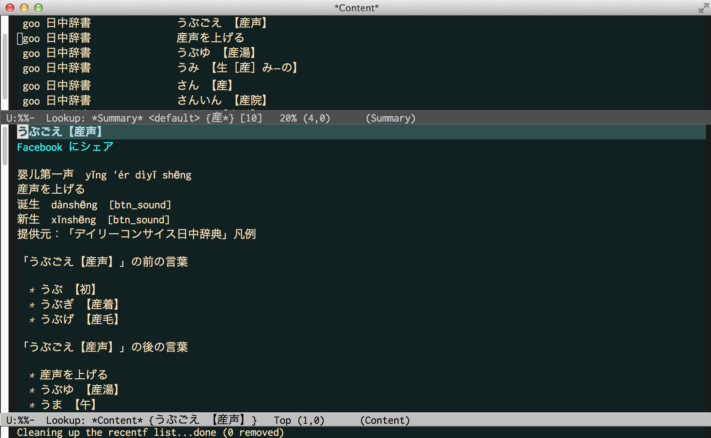

Lookup の ndweb エージェントクラスは、世界中にあるWeb上の辞書を利用できる。
ndwebのオプション
Lookup でWeb辞書を使用する場合は、以下のオプションを指定する。
- :self
- OpenSearch Description URL
- :title
- 辞書のタイトル
- :methods
- 辞書の検索メソッド（前方一致など）
- :suggestions
- 候補の選択方法 （関数ならば HTMLファイルから候補を生成、URLならば OpenSearch JSON を指定する）
- :results
- 選択した候補の内容を表示する URL。
- :method
- HTTP Post または Get のどちらを利用するか。
なお、:self が指定されているのならば、:title, :suggestions :results :methods 等のオプションの指定は必要ない。 これらは :self で指定された OpenSearch XML から自動的に取得される。逆に、:self がない場合は最低限、:title, と :results が必須になる。
Mycroft Project では、全世界 2万以上の辞書の検索エンジンの OpenSearch XML が蓄積されている。ndweb エージェントの位置に、”mycroft:XXX” を指定 すると、自動的に Mycroft のサイトからXXX の OpenSearch XML を取得して、 辞書を設定する。
ndweb-options
ndweb-options には、goo等のようないくつかのnewebエージェント用の独自オ プションがプリセットされている。ndweb-options にあるWebサイトを使えば、 自分でオプションを設定する必要なく、すぐにそのWeb辞書を利用できる。
設定
ndweb-options.el を参考に、使用したいWeb辞書のURLの ”http://” を除いた部分を指定する。
(setq lookup-search-agents
'(...
(ndweb "dictionary.goo.ne.jp/jc")
...))
